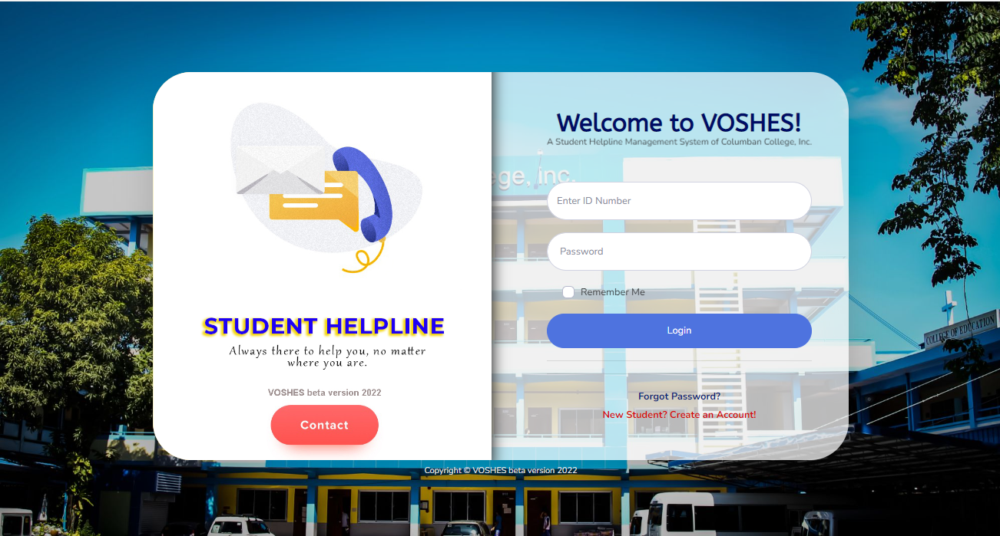
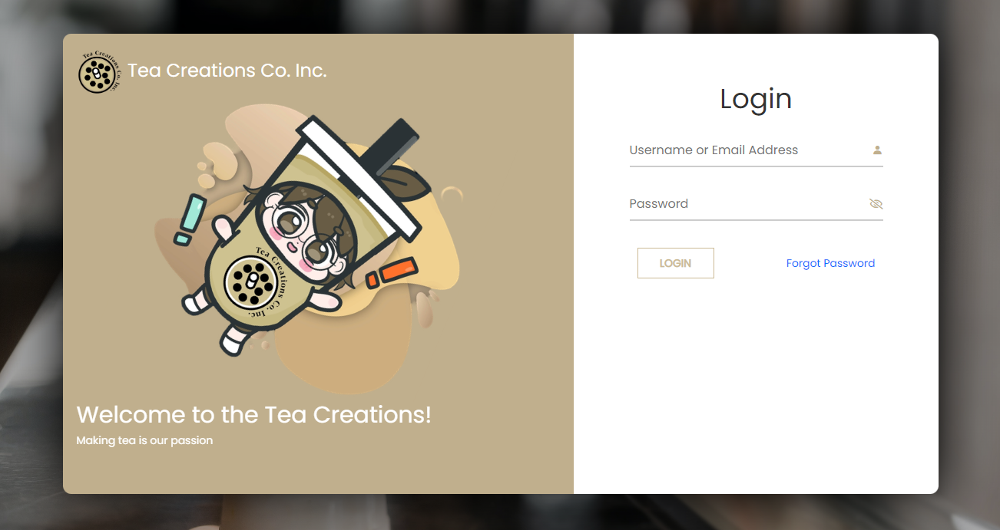
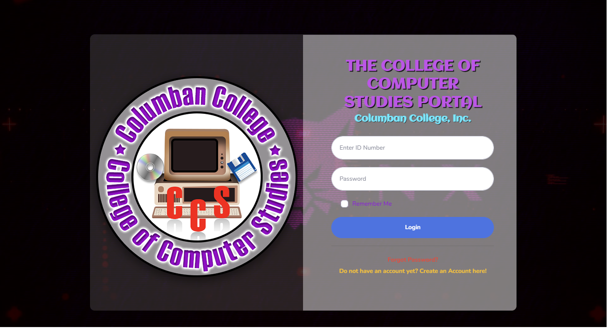
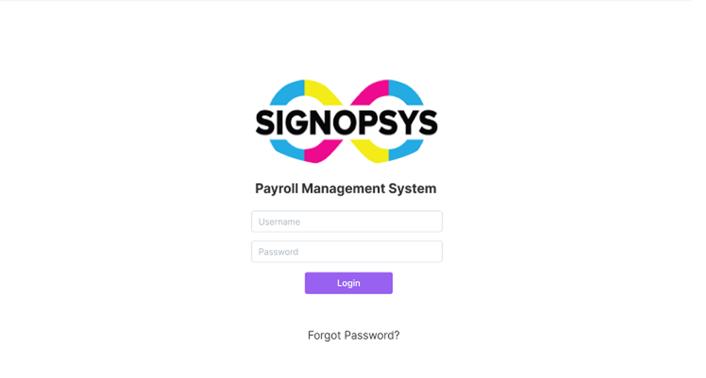
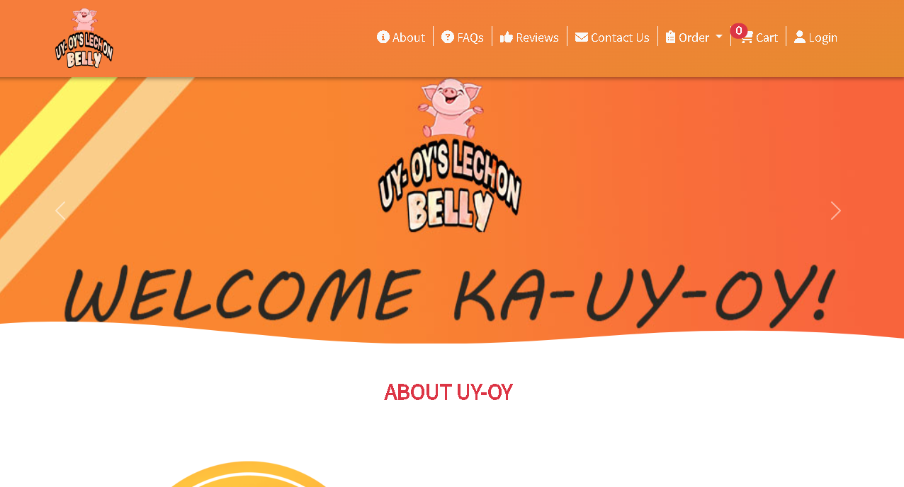
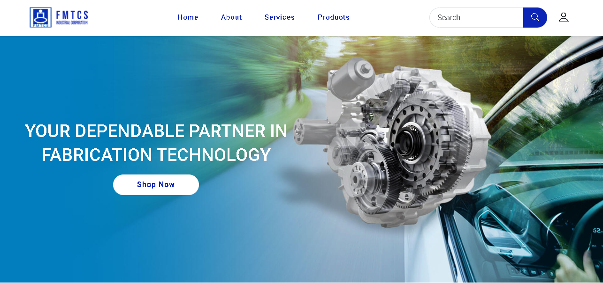

Voice Out Student Helpline Management System
During my sophomore year in college, I led a project that addressed the challenges posed by the COVID-19 pandemic. Our initiative focused on creating an online platform to facilitate remote appointments between students and their guidance counselors. This solution encompassed chat-based communication and efficient appointment scheduling capabilities, enabling students to access counseling services seamlessly during a period of restricted in-person interactions.
During my sophomore year in college, I led a project that addressed the challenges posed by the COVID-19 pandemic. Our initiative focused on creating an online platform to facilitate remote appointments between students and their guidance counselors. This solution encompassed chat-based communication and efficient appointment scheduling capabilities, enabling students to access counseling services seamlessly during a period of restricted in-person interactions.
This endeavor provided a valuable opportunity to translate theoretical coursework into real-world problem-solving. Collaborating closely with students and counselors, I learned to prioritize effective communication and teamwork. The project's success underscored the significance of applying technical skills to address pressing practical challenges.
Link to project https://gtcvoshes.epizy.com
Tea Creations POS & Inventory System
During my internship at Signopsys Inc., I was part of the back-end development team responsible for crafting a distinctive Point-of-Sale (POS) system enriched with inventory management capabilities. Our system encompassed standard POS features, but what truly set it apart was its unique and brand-aligned front-end design.
Leveraging my role, I delved into AJAX and honed my JavaScript skills, collaborating seamlessly with the front-end team. By harnessing various online libraries like Sweet Alert and Datatables.js, we expedited development while ensuring functionality and aesthetics.
This endeavor provided me with hands-on experience in SQL, PHP, and JavaScript, and I adeptly integrated different libraries to enhance web application functionality and design. The project underscored the significance of cross-team collaboration in creating a cohesive, visually appealing, and operational end product.
In sum, this internship proved transformative, refining my skill set and preparing me effectively for future web development ventures.
Computer College of Studies School Portal
In my second school project, I collaborated on a team endeavor to develop a comprehensive school portal catering to students, the registrar, and the accounting department. As a back-end developer, my primary responsibility revolved around architecting the database that underpinned the portal's functionality. While half of our team concentrated on front-end development, my focus was on meticulously designing the database structure, which was implemented using MySQLi on a XAMPP localhost server.
In my second school project, I collaborated on a team endeavor to develop a comprehensive school portal catering to students, the registrar, and the accounting department. As a back-end developer, my primary responsibility revolved around architecting the database that underpinned the portal's functionality. While half of our team concentrated on front-end development, my focus was on meticulously designing the database structure, which was implemented using MySQLi on a XAMPP localhost server.
Collectively, this project served as a pivotal learning juncture, nurturing my expertise in database design while augmenting my proficiency in JavaScript and PHP.
Payroll Management System
During my internship at Signopsys Inc., our team embarked on creating a payroll management system to optimize accounting processes. This solution streamlined employee clock-ins, automated payroll calculations, and improved overall efficiency.
In this endeavor, I assumed the role of a full-stack developer, contributing proficiently to both front-end and back-end facets. A standout lesson was the significance of employing the MVC (Model-View-Controller) architecture in web application development. Implementing this structure in the back-end enhanced organization, efficiency, and scalability.
This project markedly advanced my full-stack web development skills and provided hands-on exposure to the practical application of the MVC architecture in a real-world context. The insights gained from this experience significantly enriched my journey as a web developer.
Uyoys Lechon Belly (E-Commerce)
Our e-commerce application, tailored for the niche of lechon sales, was meticulously crafted through a fusion of PHP, AJAX, SQL, and open-source libraries. This technology synergy not only facilitated sales transactions but also provided a comprehensive solution for inventory management and receipt generation.
The core of the application's functionality was powered by PHP, enabling dynamic web page creation and ensuring fluid user interactions. AJAX integration further elevated user experience by enabling real-time updates without the need for page reloads.
Integral to the application was a sophisticated inventory management system orchestrated through SQL. This system flawlessly organized product data, stock levels, and sales history, ensuring real-time stock visibility for both sellers and buyers.
Additionally, the application streamlined transactions with automated receipt generation, a feat achieved through the harmonious interplay of PHP and open-source libraries. This meticulous combination guaranteed transparency and reliability in transaction documentation.
FMTCS (E-Commerce)
Our specialized e-commerce platform, tailored to the distinct market of lechon sales, was intricately developed by harnessing the capabilities of Laravel, its packages, and a range of open-source JavaScript libraries. This harmonious technological fusion not only facilitated smooth sales transactions but also delivered an encompassing solution for dynamic inventory management and automatic receipt generation.
The heart of this platform's functionality beat with Laravel, empowering dynamic web page creation and ensuring seamless user interactions. The amalgamation of open-source JavaScript libraries further enriched user experience, enabling real-time updates without the necessity for page reloads.
Central to the application was an advanced inventory management system orchestrated through Laravel and backed by SQL. This system adeptly organized product information, stock levels, and transaction history, offering real-time insights into stock availability for both sellers and buyers.
Moreover, the platform streamlined transactions through automated receipt generation, a remarkable feat achieved through the orchestrated synergy of Laravel, along with various open-source JavaScript libraries catering to interactive chart visualization and alerts. This meticulous integration ensured transparent and dependable documentation of each transaction.
In essence, our e-commerce platform seamlessly converged the prowess of Laravel, specialized packages, and open-source JavaScript libraries, resulting in an intuitive and comprehensive system. Beyond its dedication to the unique domain of lechon sales, this project stood as a testament to the efficacy of blending technologies to heighten operational efficiency and user experience.
Transaction Inventory System
Our transaction and inventory management system was meticulously built using the capabilities of Laravel, a robust PHP framework. This technological foundation allowed us to seamlessly integrate essential features for modern business operations. With a strong emphasis on comprehensive transaction tracking, dynamic inventory management, and automated receipt generation, our system was tailored to meet the complex demands of businesses today.
Central to the system's architecture was the utilization of Laravel's dynamic capabilities. This enabled us to create engaging web pages that ensured smooth user interactions. The structured framework provided a solid basis for seamlessly integrating intricate functionalities, resulting in a user-friendly experience.
A key strength lay in the system's robust transaction tracking mechanism. Leveraging Laravel's power, we developed a platform that adeptly captured and organized company transactions, encompassing both sales and purchases. This facilitated accurate and transparent financial record-keeping.
Simultaneously, the inventory management aspect, facilitated by Laravel, allowed real-time stock tracking and insights into product movement. This proved invaluable for businesses striving to optimize their inventory levels and respond promptly to market trends. Additionally, the system's capability to generate official receipts underscored Laravel's versatility, enhancing trust and professionalism in transactions.
In summary, our transaction and inventory management system harnessed Laravel's capabilities to construct a versatile platform. The integration of its features ensured thorough transaction tracking, efficient inventory management, and professional documentation through automated receipt generation. This comprehensive solution showcased Laravel's ability to create user-centric, business-driven applications.